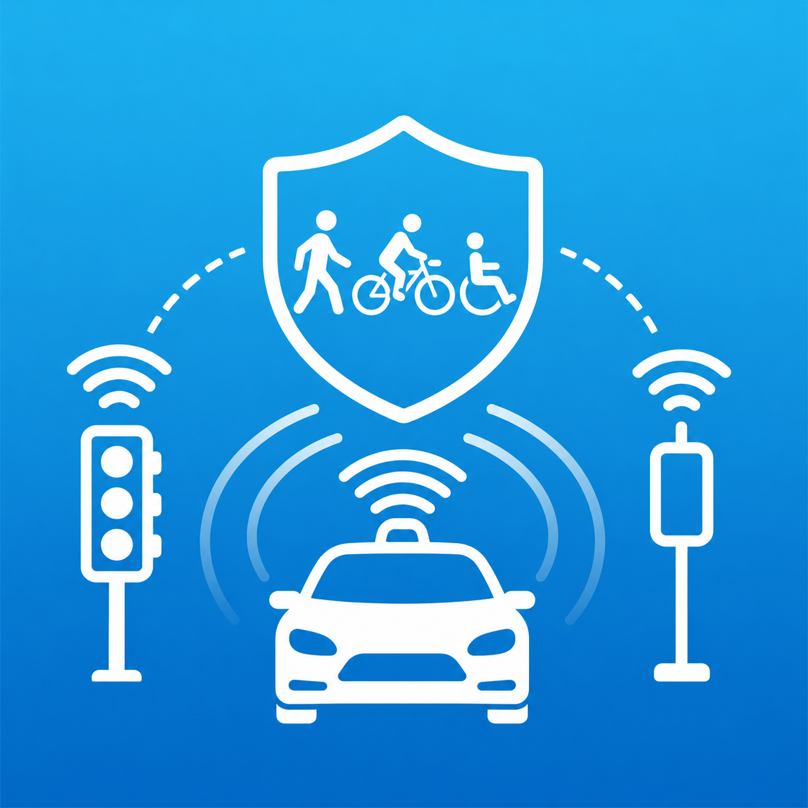

Enhancing Safety and Trust in Mixed Traffic Environments with Connected and Automated Vehicles
The project aims to enhance safety and trust in mixed traffic environments by developing an integrated framework for interactions between Connected and Automated Vehicles (CAVs) and Vulnerable Road Users (VRUs). The research combines multimodal sensing, perception, behavior and intent prediction, VRU adversarial behavior recognition, cooperative perception, and risk-aware decision-making to enable automated vehicles to recognize both normal and potentially unsafe or adversarial VRU behaviors and respond appropriately. The framework will be validated through advanced simulation, hardware-in-the-loop, vehicle-in-the-loop, and controlled field testing, supporting Saudi Vision 2030 goals for safe, trustworthy, and human-centered autonomous mobility.